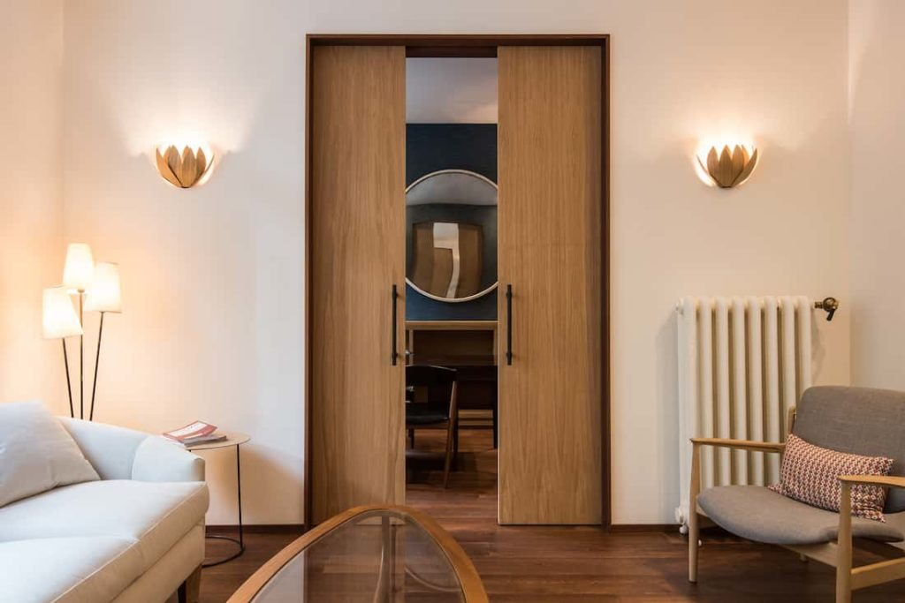

Los usos de la madera de roble son muy variados, debido a sus propiedades y características. Algunos de los más conocidos son como: mobiliario de alta calidad, carpintería o suelos para interiores, construcción, fabricación de barcos, vigas de madera, tableros, chapas decorativas, tonelería y torneados.
